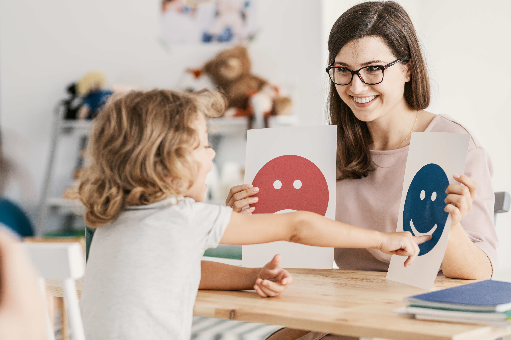

Cognição é o processamento da informação, a resposta que o indivíduo apresenta diante de uma informação, um estímulo ou uma situação. É o processo de aquisição do conhecimento propriamente dito, desde o recebimento da informação até a culminação na resposta emitida.
Já a cognição social se refere a inúmeras habilidades que permitem que o indivíduo processe as informações sociais – interpretando-as em relação às suas experiências vividas, por meio de memórias sociais – e devolva/responda da forma esperada socialmente – por meio de interações sociais. Portanto, todas as emoções e suas expressões estão contidas nesse contexto.
Todo o processo, bem como as características das aquisições sociais, depende de duas causas específicas: o ambiente e a estimulação, incluindo a predisposição para a carga recebida. Testes em bebês típicos apresentam resultados que demonstram essa predisposição para receber e responder a informações sociais, pois eles preferem olhar para o rosto de uma pessoa do que para objetos. O bebê que responde melhor a essas dicas predispostas apresenta condições importantes e mais desenvolvidas na interação social.
Figura 1 – Identificação das expressões faciais

Photographee.eu/Shutterstock
A literatura demonstra, em diversos estudos científicos nacionais e mundiais, que as habilidades cognitivas sociais estão ligadas diretamente ao funcionamento adaptativo, ou seja, à forma como o indivíduo responde, socializa, interage e atua com independência diante das informações recebidas e da sua interação e resposta nas diversas situações, desde as mais complexas até as cotidianas.
No indivíduo que apresenta o espectro, as respostas são diferentes das esperadas socialmente, dependendo da gravidade, da comorbidade e dos prejuízos associados ao transtorno, considerando a tríade de comprometimentos e características que sinalizam o espectro:
Vídeo
O vídeo Autismo e Cognição Social – Dra. Tatiana Pontrelli Mecca, publicado pelo canal Luna ABA, discute a importância da cognição social no desenvolvimento humano e nas pessoas com autismo.
Existem testes, inclusive não verbais, que apontam que os deficits nas habilidades cognitivas dos indivíduos com autismo estão correlacionados a aprendizagens anteriores, à falta da imitação e à predisposição inerente a respostas e estímulos, diferentemente dos resultados encontrados no indivíduo sem o espectro.
O teste SON-R é um dos poucos disponíveis no país. Trata-se de uma escala que avalia de maneira não verbal, padronizado o nível cognitivo, as habilidades espaciais e visomotoras e o raciocínio concreto e abstrato. É destinado a crianças com idade entre 2 anos e 6 meses até 7 anos e 11 meses que apresentam distúrbios do desenvolvimento (MECCA et al., 2020; ANTONIO; MECCA; MACEDO, 2012).
Qual é a importância de identificar os níveis de desenvolvimento e inteligência no que tange à cognição social? Em primeiro lugar, é importante definirmos inteligência, vista como a competência de se ter um pensamento abstrato, a resolução de problemas, a socialização, as conquistas acadêmicas e profissionais, enfim, inúmeras e específicas habilidades que adquirimos com vivência, imitação e troca de experiências (ANTONIO; MECCA; MACEDO, 2012). De acordo com Macedo et al. (2013), no autismo a relevância de avaliar a inteligência está em identificar o nível de gravidade dos sintomas e sinais apresentados, dos deficits no funcionamento adaptativo e do planejamento das intervenções que servirão para minimizar tais condições, principalmente em crianças não verbais.
Ressaltamos, assim, a importância da interação social e a relevância da comunicação e consequentemente da linguagem nesse processo, assunto que será abordado na seção a seguir.
Saiba mais
O SON-R 2½-7 [a] é um instrumento que mede a inteligência, avaliando de modo geral as habilidades cognitivas, porém o seu diferencial é que a criança não precisa ser oralizada, pois se trata de um teste não verbal. São quatro subtestes, que avaliam habilidades espaciais e visomotoras, além de raciocínio abstrato e concreto. Por ser um teste que não necessita ter respostas verbais, pode servir como a primeira opção na tomada de decisões no processo avaliativo. O público-alvo são crianças com dificuldades auditivas, problemas de linguagem, autismo e transtornos de desenvolvimento, além de imigrantes cuja primeira língua é diferente da falada no país em que está.